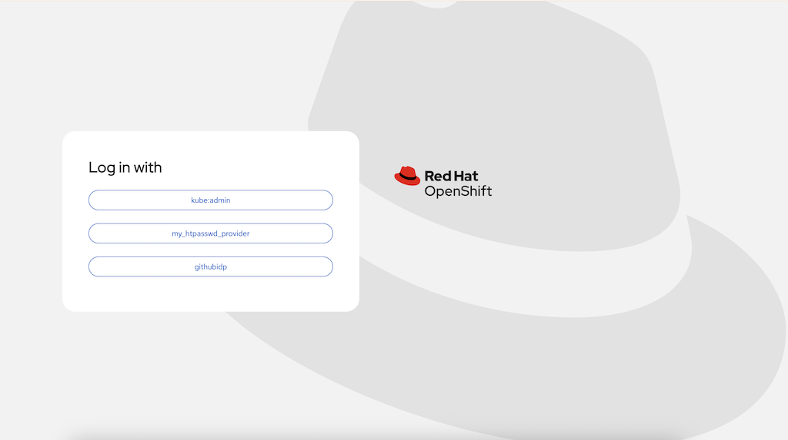

vm as a service
Pipeline
Developers need not to install any local tools as following tools are provides as part of the workshop setup:
Examine the following pipelie:
apiVersion: tekton.dev/v1
kind: Pipeline
metadata:
name: vm-as-a-service
spec:
params:
- default: create
description: create or delete
name: action
type: string
- default: pss
name: tenant
type: string
- default: main
name: REVISION
type: string
tasks:
- name: git-clone
params:
- name: refspec
value: ''
- name: submodules
value: 'true'
- name: depth
value: '1'
- name: sslVerify
value: 'true'
- name: crtFileName
value: ca-bundle.crt
- name: subdirectory
value: ''
- name: sparseCheckoutDirectories
value: ''
- name: deleteExisting
value: 'true'
- name: httpProxy
value: ''
- name: httpsProxy
value: ''
- name: noProxy
value: ''
- name: verbose
value: 'true'
- name: gitInitImage
value: >-
registry.redhat.io/openshift-pipelines/pipelines-git-init-rhel8@sha256:868966ef9d4b54952d8a74eb83bba40eb1f52c0148994fa704efd0e3797c61c5
- name: userHome
value: /home/git
- name: URL
value: https://github.com/Caseraw/OpenShiftDemoTime
- name: REVISION
value: $(params.REVISION)
taskRef:
params:
- name: kind
value: task
- name: name
value: git-clone
- name: namespace
value: openshift-pipelines
resolver: cluster
workspaces:
- name: output
workspace: source
- name: provision-vms
params:
- name: SCRIPT
value: >-
sed -e 's/TENANT/$(params.tenant)/g' scenarios/uc02-vm-as-a-service/appset.yaml |
oc $(params.action) -f - -n openshift-gitops
- name: VERSION
value: latest
runAfter:
- git-clone
taskRef:
params:
- name: kind
value: task
- name: name
value: openshift-client
- name: namespace
value: openshift-pipelines
resolver: cluster
workspaces:
- name: manifest_dir
workspace: source
workspaces:
- name: source
optional: false
finally: []
There are different ways to run the pipeline, for example, using the OpenShift Web Console or the OpenShift CLI. The following command will run the pipeline using the OpenShift CLI:
oc apply -f pipeline.yaml
to run crate the pipeline using the webconsole, follow the screens below:
-
Open the OpenShift Web Console
https://console-openshift-console.apps.ocp4.example.comLogin using following credentials:
USERNAME: %USERNAME% PASSWORD: %PASSWORD% -
Click on the "project" menu item in the left navigation panel under "Home"
create a new project called
%USERNAME%-demo -
Click on the "Pipelines" menu item in the left navigation panel
Click on "Create" then "Pipeline" and switch to "YAML view"
-
Copy the content of the above pipline and click "Create"
-
OpenShift Web Console
-
OpenShift Web terminal (web based OC CLI)
-
OpenShift DevSpaces (web based IDE)